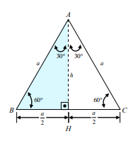
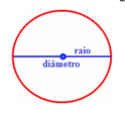
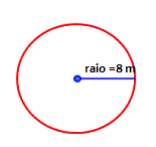
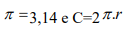
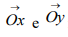
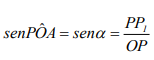
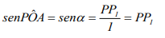
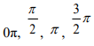

CAPÍTULO 3 – A INDÚSTRIA DA CONSTRUÇÃO CIVIL
AS RAZÕES TRIGONOMÉTRICAS E O CICLO TRIGONOMÉTRICO NO CONTEXTO DA INDÚSTRIA DA CONSTRUÇÃO CIVIL
Contextualizando
Contextualizamos o estudo a trigonometria à indústria da construção civil com base no artigo “O Mundo da Construção Civil”: Uma abordagem da trigonometria com perspectiva na etnomatemática de autoria de Gedir Bertoli e Miriam Inês Marchi, publicado em Alta Scientriae, Canoas, V.15, n.2, maio/agosto 2013). Nele, elas relatam que formaram grupos de alunos que entrevistaram profissionais da Construção Curl.
Um grupo entrevistou um engenheiro civil e dois pedreiros a respeito do uso da trigonometria na construção de “tesouras” de sustentação dos telhados de residências. Outro grupo entrevistou um engenheiro civil, um arquiteto e um mestre de obra a respeito da trigonometria no esquadro do chão com uma parede de um cômodo e um terceiro grupo entrevistou um engenheiro civil um arquiteto e um mestre de obra, a respeito da trigonometria na determinação do desnível entre os pontos de um terreno.
Quanto às tesouras de sustentação dos telhados, um dos entrevistados relatou que é necessária uma inclinação de 40%, o que significa que “se uma casa tem 10m de comprimento, dividimos essa medida por dois e o resultado multiplicamos pela porcentagem e isso dá 2 metros”.
A relação estabelecida está associada à tangente do ângulo agudo (uma razão trigonométrica) que relaciona o cateto oposto com o cateto adjacente a um agudo no triângulo retângulo. Observe os desenhos que representam o que o entrevistado falou a respeito das tesouras.
No artigo, as autoras relatam as constatações dos alunos quanto à relação da trigonometria na determinação do desnível entre dois pontos de um terreno “comentada por um pedreiro entrevistado. Nesse tema o profissional da construção civil mencionou o uso do teodolito relacionado à medida de ângulos e as aplicações do Teorema de Pitágoras.
Os instrumentos de medida como tremas, réguas, jogo de esquadros, são as ferramentas do arquiteto e do pedreiro que também usam o nível e o prumo em seus ofícios.
O surgimento da trigonometria é associado à necessidade de medir distâncias inacessíveis (aquelas que não podemos medir com réguas ou tremas). Com o uso do teodolito, obtendo medida ou ângulos, os profissionais da construção civil, com o uso das razões trigonométricas definidas no triângulo retângulo, calculam essas distâncias.
Que conhecimento básico de trigonometria auxilia na resolução de problemas da realidade?
Cara aluno
Nesse capitulo, vamos retornar conhecimento de trigonometria no triangulo retângulo e ampliar esse tema para o trigonométrico, destinado às funções trigonométricas e seus gráficos.
RETOMANDO PARA PROSSEGUIR...
A RELAÇÃO DE PITÁGORAS
Observe, na figura a seguir, a relação conhecida como Teorema de Pitágoras.
Considerando o triângulo retângulo em que o lado a é a hipotenusa e os lados b e c são os catetos, verificamos que, construindo um quadrado a partir dos três lados do triângulo, a área do quadrado construído a partir da hipotenusa é igual à soma das áreas dos quadrados construídos a partir dos catetos.
Assim 52 = 42 + 32 isto é 25 = 16 + 9
Como essa relação vale para todos os triângulos retângulos, temos que:
Para todo o triângulo retângulo, o quadrado da hipotenusa é igual à soma dos quadrados dos catetos ou considerando a hipotenusa e b e c os catetos, temos: a2 = b2 +c2
AS RAZÕES TRIGONOMÉTRICAS E OS ÂNGULOS NOTÁVEIS
Lembre que:
A soma dos ângulos internos de um triângulo é 180°
O triângulo retângulo tem um ângulo reto cujo símbolo é e dois ângulos agudos cuja soma é 90º.
No triângulo retângulo, a hipotenusa é maior lado e opõe-se ao ângulo reto. Considerando um dos ângulos agudos, o cateto que o forma é o cateto adjacente e o outro cateto é chamado de cateto oposto. Veja as figuras a seguir:
A altura de um triângulo é o segmento de reta perpendicular traçado de um vértice ao seu lado oposto.
Ângulo agudo mede mais que zero graus e menos do que noventa graus;
A diagonal do quadro é o segmento de reta que liga dois pontos não consecutivos:
O triângulo equilátero tem os três lados e os três ângulos de mesma medida e que seus ângulos internos medem 60º.
ÂNGULOS NOTÁVEIS

No estudo da Trigonometria, os ângulos de 300, 450 e 600 são
muito utilizados e são chamados de ângulos notáveis. São
calculados a partir do triângulo equilátero e da diagonal do
quadrado com o uso do Teorema de Pitágoras.
Considere o triângulo equilátero ABC, com o lado de medida a:
Usando a relação de Pitágoras, observe no triângulo equilátero
AHB, retângulo em H, a altura (h) em função de a.
Ainda, considerando o triângulo AHB, retângulo em H, vamos calcular o seno, o cosseno e a
tangente de 30° e de 60o, os ângulos agudos do triângulo AHB, retângulo em H.
Lembrando as razões trigonométricas no triângulo retângulo, considerando α um ângulo
agudo do triângulo retângulo, temos que:
Assim, considerando o triângulo △AHB, retângulo em H, temos:
Agora, observe o quadrado ABCD cujo lado tem medida a e o triângulo ACB retângulo em B, cuja hipotenusa AC é a diagonal do quadrado e tem medida d.
Usando a relação de Pitágoras, determinamos no quadrado ABCD, a diagonal (d) em função de a
d2 = a2 + a2
d2 = 2 a2
d = a√2
Considerando o quadrado ABCD lembrando que:
Considerando o triângulo ACB, retângulo em B, a partir da Relação de Pitágoras calculamos que d = a√2. Considerando que a diagonal do quadrado ABCD divide o ângulo A em dois: ângulos de 45º e considerando, ainda o triângulo ABC tem-se:
Conseguimos, assim, calcular as relações trigonométricas seno, cosseno e tangente dos ângulos de 30º, 45º e 60º chamados ângulos notáveis. A partir dos cálculos efetuados construímos a seguinte tabela de relações trigonométricas:
O que é Módulo de um arco de ciclo trigonométrico?
Um arco de um ciclo trigonométrico é positivo, se o sentido for anti-horário e negativo, se o sentido for horário. Módulo de um arco é o seu valor absoluto entendido como valor positivo do arco.
VOCÊ SABIA?
O TEODOLITO é um instrumento de
precisão óptico utilizado para medir
ângulos verticais e horizontais. É muito
usado em diversos setores como na
navegação, na metalurgia, na topometria,
na construção civil entre outros. Existem
diferentes tipos de teodolitos.
No caso de se calcular a área de um local, primeiramente o
teodolito é posicionado no primeiro ponto, totalmente nivelado com o eixo de gravidade do
local e que o 0° do movimento horizontal esteja direcionado a um ponto de referência no polo
mais próximo. Depois, o segundo ponto, marcado com uma
estaca ou outro ponto (como uma árvore), é mirado através do
telescópio, e a angulação obtida é medida na horizontal e na
vertical. Usando uma fita métrica, mede-se a distância entre os
dois pontos. A partir desse esse raciocínio, a distância e os
ângulos vertical e horizontal entre os outros pontos do local a ser
estudado são medidos e a área pode ser calculada. Muito usado
em metalurgia.
Atividade prática: a construção de um teodolito
Vamos construir um teodolito bem simples que possibilita medir ângulos com uma certa precisão.
Material: Xerox de 1/4 de um transferidor, um canudo ou uma caneta esferográfica sem a carga, uma tachinha, um pedaço de barbante, um peso, um pedaço de papelão, cola e fita adesiva.
Recortar a cópia do transferidor e colar no papelão. Com a fita adesiva, fixar o canudo em uma das extremidades do transferidor e com a tachinha, no vértice do ângulo reto, fixar o cordão com o peso colocado em um de suas pontas.
MEDINDO DISTÂNCIAS INACESSÍVEIS
Há distâncias inacessíveis de medir com instrumentos comuns de medida. Usam-se, então, as razões trigonométricas que nos permitem calcular essas distâncias.
Para medir o ângulo (a), usando o teodolito construído, deve-se mirar o objeto a ser medido de tal forma que, ao inclinar o teodolito, o barbante com o peso indique o ângulo formado entre a horizontal (direção em que se encontra o observador) e a direção do observador ao ponto de mira, conforme a figura abaixo.
Sabendo o valor desse ângulo e a medida da distância do observador ao objeto a ser medido (segmento AB), a partir das razões trigonométricas no triângulo retângulo, pode-se calcular a altura de um prédio, conforme desenho a seguir.
Suponha que, no triângulo retângulo ABC, retângulo em B o valor do ângulo agudo πα do desenho acima é 30o e que a distância AB do observador à base do prédio é 5m. Quanto mede a altura do prédio?
Para calcular a altura do prédio (o cateto oposto ao ângulo A), temos o valor do ângulo A e do cateto adjacente AB. A altura do prédio (o lado BC) é o cateto oposto ao ângulo α. Assim, vamos utilizar a relação tangente do ângulo que relaciona o cateto oposto com o cateto adjacente. Procurando na tabela de ângulos notáveis, temos que:
VAMOS PRATICAR...
TRIGONOMETRIA NO TRIÂNGULO RETÂNGULO
1) Tomando um quadrado de lado 1, calcule o seno, o cosseno e a tangente do ângulo de 45º formado pelo lado do quadrado e sua diagonal.
2) Desenhe um triângulo equilátero de lado 1 e a altura relativa à base. Sabendo que a altura é perpendicular à base e bissetriz do ângulo oposto a ela, calcule o seno, o cosseno e a tangente dos ângulos de 60º e de 30º. Observação: não esqueça de racionalizar os denominadores e deixe os irracionais na forma de √a
3) Consultando a tabela de razões trigonométricas, resolva as questões a seguir:
a) Num triângulo retângulo, a hipotenusa mede 6 cm, e um dos ângulos agudos mede 40º
determine a medida dos catetos.
b) Uma rampa lisa de 10m de comprimento faz um ângulo de 30º
com plano horizontal.
Uma pessoa que sobe essa rampa inteira eleva-se quantos metros verticalmente?
c) Em um exercício de tiro, o alvo se encontra numa parede e sua base está situada a 20m
do atirador. Sabendo que o atirador vê o alvo sob um ângulo de 10º
em relação à
horizontal, calcule a que distância a mosca do alvo se encontra do chão.
COMPRIMENTO DA CIRCUNFERÊNCIA
 No próximo capítulo, vamos estudar as funções trigonométricas na circunferência trigonométrica. Para isso, agora, vamos retomar o estudo da medida do comprimento da circunferência em graus o que já estudamos no ensino fundamental e vamos aprender a medida da circunferência em radianos, outra unidade de medida da circunferência.
Para determinar a medida do comprimento da circunferência em graus, utilizamos a medida de seu raio e de π que vale 3,14, aproximadamente, pois calculamos a medida da circunferência, usando a relação C = 2πr, sabendo que r é a medida do raio da circunferência.
 Lembre que, numa circunferência, a medida do raio é a metade da medida do diâmetro.
Exemplo: Se uma circunferência possui um raio medindo 8 metros, seu comprimento será calculado da seguinte maneira: Sabendo que: C é a medida do comprimento da circunferência cuja fórmula de cálculo é C = 2πr , sendo que π: é aproximadamente 3,14 e r é medida do raio da região circular (8m). Qual é a medida C da circunferência?
Substituímos a medida do raio e o valor do π na fórmula e realizamos os cálculos: C= 𝟐𝛑𝐫 = 2.3,14.8 = 50,24m
VAMOS PRATICAR...
Para os exercícios a seguir, usar 
4) Calcule em cm, o comprimento de uma circunferência de 5cm de raio.
5) Considere uma circunferência de raio 8cm. Um inseto parte de um ponto A e anda sobre ela até o ponto B, no sentido horário, percorrendo um arco que equivale a um ângulo central AÔB que mede 60o. Determine quantos centímetros andou o inseto.
6) A roda dianteira de uma bicicleta tem 42 cm de raio. Pergunta-se:
a) Quantos metros ela percorre ao dar 200 voltas?
b) Quantas voltas ela deve dar para percorrer 26376m?
c) Os arcos de circunferência e a medida da circunferência em radianos
PARA SABER MAIS
ARCO DE CIRCUNFERÊNCIA
Arco de circunferência é cada uma das duas partes em que uma circunferência fica dividida por dois pontos. Assim, sendo A e B dois da circunferência, eles a dividem em duas partes, determinando um arco.
Todo o arco de circunferência define um ângulo central e todo o ângulo central define um arco de circunferência.
ÂNGULO CENTRAL
Ângulo central de uma circunferência é o ângulo que tem o vértice no centro O da circunferência.
Um arco de circunferência AB, em graus, tem a mesma medida que o ângulo central.
O comprimento de um arco é proporcional à medida do ângulo central, quanto maior o ângulo, maior o comprimento do arco; e quanto menor o ângulo, menor o comprimento do arco. quanto maior o ângulo, maior o comprimento do arco; e quanto menor o ângulo, menor o comprimento do arco.
MEDIDAS DE ARCOS
Temos dois tipos de medidas para determinar os arcos de uma circunferência: a linear e a angular.
A medida linear de um arco a circunferência AB é a distância EF entre dois pontos quaisquer A e B que pertencem à circunferência linearizada. Observe o desenho a seguir:
Distância de A até B é a medida EF do arco linearizado.
Verificando o que é 1 radiano e determinando a medida da circunferência em radianos.
Sabendo que o radiano consiste no arco cujo comprimento é igual à medida do raio da circunferência que o contém, concluímos que um arco de 3 rad corresponde ao arco de comprimento igual a 3 raios da circunferência.
Observe o desenho a seguir:
Comprimento AB = 3r → m(AB) = m(AÔB) = 3 rad
ATIVIDADE PRÁTICA
Realize essa atividade prática para verificar porque 1 radiano (1 rad) é igual a 1 raio da circunferência que o contém e porque C = 2πrad.Com o auxílio de um cordão e um objeto circular (um cartão circular ou uma tampa) que tenha o centro marcado, pode-se construir a ideia de radiano (rad).
Contorne o objeto circular com um barbante, cortando o pedaço que corresponde à circunferência, retificando-o. Com outro barbante, corta-se um pedaço com a medida do diâmetro, dobrando-o ao meio, cortando o pedaço que corresponde ao raio.
Marque o raio no cordão correspondente à circunferência retificada tantas vezes quantas for possível, conforme desenho abaixo.
Verifique que o raio “cabe”, aproximadamente, seis vezes e mais um pedacinho na circunferência. Contornando o objeto circular com o barbante, você terá marcado nele os arcos da circunferência como medida igual a 1 radiano que cabe seis vezes mais “um pedacinho” na circunferência e que corresponde à medida do ângulo central, como mostra a figura:
O “pedacinho” C correspondente 0,281... do raio, sabendo que π é 3,1416.., pode-se concluir que 1 radiano como 1 raio cabe 6,2831 vezes na circunferência. Assim pode-se retomar que o comprimento da circunferência é 2πr e que uma volta completa na circunferência (ou ciclo) trigonométrica é 2πrad
Vimos que existe uma relação entre as medidas em grau e radiano, podemos destacar a seguinte relação:
360º → 2π radianos (aproximadamente 6,28)
180º → π radiano (aproximadamente 3,14)
90º → π/2 radiano (aproximadamente 1,57)
45º → π/4 radiano (aproximadamente 0,785)
As medidas de arcos de circunferências em graus e em radianos são diretamente proporcionais, dessa forma podemos realizar as conversões utilizando uma regra de três simples.
Exemplo 1: Se o arco AB medir 30o quanto medirá em radianos?
Considerando x a medida do arco em radianos, o que se quer encontrar:
Exemplo 2: Se o arco AB medir 2/3 πrad quanto ele medirá em graus?
Considerando x a medida do arco em graus, o que se quer encontrara:
A CIRCUNFERÊNCIA OU CICLO TRIGONOMÉTRICO
Observe o círculo desenhado a seguir. Vamos considerar um Plano Cartesiano desenhado num círculo cujo centro coincida com a origem do plano, o ponto (0, 0), o raio seja a unidade de medida dos arcos e o ponto A de origem dos arcos definidos na circunferência.
PARA SABER MAIS...
O círculo é a "superfície plana limitada por uma linha curva - a circunferência - cujos pontos são equidistantes de um ponto fixo”.
A circunferência é uma "linha curva fechada, regular ou não, que limita um círculo" 360º.
Considere o ponto B, localizado na circunferência que chamaremos de circunferência ou ciclo trigonométrico e identifique o arco AP.
Considere, então, que o ciclo trigonométrico é uma circunferência orientada e que o sentido indicado pela seta (o sentido anti-horário) seja o sentido positivo e o sentido horário o sentido negativo. Assim, o arco assume valores positivos e negativos.
Dessa forma, associados ao ponto B, temos dois arcos, um positivo e outro negativo cujos módulos somam 360º
Um arco de um ciclo trigonométrico é positivo, se o sentido for anti-horário e negativo, se o sentido for horário. Módulo de um arco é o seu valor absoluto entendido como valor positivo do arco.
Estudamos que um arco de circunferência pode ser medido em graus ou radianos e que se tivermos a medida de um arco em graus, podemos transformá-la em radianos e, se tivermos a medida de um arco em radianos, podemos transformá-la em graus, utilizando uma regra de três, pois essas grandezas são diretamente proporcionais.
ARCOS CÔNGRUOS
No ciclo trigonométrico, um arco a partir da origem, o ponto A, pode dar mais de uma volta no ciclo trigonométrico no sentido positivo ou negativo, portanto, ele pode medir mais ou menos de 360o ou mais ou menos de 2πrad. Assim, um arco no ciclo trigonométrico pode medir, por exemplo, 1234o ou -3280o ou -14/3π rad ou -5π rad ou -60 o que indica que esses arcos medem mais de uma volta no ciclo trigonométrico.
Dois arcos trigonométricos AM e NA são côngruos se, e somente se, as extremidades M e N coincidem (são arcos que têm a mesma origem e a mesma extremidade, independente do número de voltas).
Para saber quantas voltas foram dadas, qual q menor determinação positiva e em que quadrante esses arcos se localizam, procede-se da seguinte forma:
Exemplo 1:
Se o arco positivo estiver determinado em graus, divide-se a medida do arco por 360º (volta completa em graus), o cociente da divisão será o número completo de voltas dadas no sentido positivo e o resto da divisão será o arco da primeira volta chamada menor determinação positiva do arco
Observe o cálculo a seguir:
Exemplo 2:
Se o arco positivo estiver determinado em radianos, subtrai-se sucessivamente 2π e quando o resto for menor do que 2π (1 VOLTA COMPLETA EM RADIANOS), determinamos o número de voltas(quantas vezes se tirou 2π) e a sua menor determinação positiva do arco.
Observe o cálculo a seguir:
Cada volta corresponde a 2π
Exemplo 3:
Se o arco negativo estiver determinado em graus, divide-se a medida do arco por 360º (VOLTA COMPLETA EM GRAUS). O cociente da divisão será o número completo de voltas dadas no sentido negativo e o resto da divisão será negativo. Para determinar a menor determinação positiva do arco, subtrai-se de 360o o valor absoluto do resto (encontrando os dois arcos associados à extremidade B). O resto da subtração será a menor determinação positiva do arco.
Observe o cálculo a seguir:
Exemplo 4:
Se o arco negativo estiver determinado em radianos, subtrai-se sucessivamente -2π até que o resto seja menor do que 1 VOLTA COMPLETA EM RADIANOS NO SENTIDO NEGATIVO. ENTÃO, determinamos o número de voltas (quantas vezes se tirou -2π).Para determinar a menor determinação positiva do arco, subtrai-se de 2π o valor absoluto do resto O resto da subtração será a menor determinação positiva do arco. Assim, encontramos os dois arcos associados à extremidade B do ciclo trigonométrico.
Observe o cálculo a seguir:
Cada volta no sentido negativo corresponde a - 2π.
-5π – (-2π) = - 5π + 2π = - 3π
-3π – (-2π) = -3π + 2π = -1π (resto: 1 volta)
O arco - 5π tem 2 voltas completas no sentido negativo. Sua maior determinação positiva é 1π radiano.
2π – 1π = 1π
VAMOS PRATICAR...
1) Determine a medida em radianos de um arco de:
2) Determine a medida em graus de um arco de:

3) Desenhe um ciclo trigonométrico e nele localize os arcos de medidas
4) Calcular a menor determinação dos arcos cujas medidas são:
PARA SABER MAIS...
O QUE É PROJEÇÃO ORTOGONAL
A projeção ortogonal de uma figura em um plano que não contém nenhum de seus pontos, é a imagem da figura formada pela ligação das projeções ortogonais de cada ponto da figura nesse plano.
A projeção ortogonal de um ponto P sobre um plano α é a imagem P do ponto (P) determinada no plano α pelo pé do segmento da perpendicular a esse plano que liga o ponto P a sua imagem P’.
A projeções de um segmento de reta (AB) não ortogonal ao plano sobre um plano α é o segmento de reta (A’ B’) cujas extremidades são as projeções ortogonais A’ e B’ de suas extremidades pontos A e B.
DEFININDO O SENO E O COSSENO DE UM ARCO
Considerando o sistema cartesiano centrado em O, localize, no círculo trigonométrico, o ponto P, extremidade do arco de medida α. Você pode verificar, projetando ortogonalmente o ponto P sobre os eixos  respectivamente, que ele tem uma abscissa e uma ordenada.
Considerando o triângulo POP1, retângulo em P1 e o ângulo PÔA, de medida α. Sabe-se que a medida de PÔA é igual à medida de que é igual a α.
Tem-se que  e que OP = 1 (medida do raio do círculo trigonométrico).
Assim 
Projetando ortogonalmente o segmento PP1 sobre o eixo das ordenadas, verifica-se que OP2, ordenada de P, é a projeção ortogonal de PP1 sobre o eixo das ordenadas.
Assim: sen PÔA = sen = OP2 = ordenada de P
Conclui-se que a função seno de um arco de medida α é a função de R em R que a todo número α associa a ordenada do ponto P, imagem de α no círculo trigonométrico.
O eixo Oy passa a ser denominado eixo dos senos.
De forma análoga,
Assim, a função cosseno de um arco de medida α é a função de R em R que a todo o número α associa a abscissa do ponto P, imagem de α no círculo trigonométrico. Assim:
Considerando o ponto P, tem-se que P (cos α , sen α ).
VAMOS PRATICAR...
5) Verifique os valores do seno e do cosseno, quando a medida de α é  complete o quadro 1.
6) Considerando , arcos do 1º, 2º, 3º e 4º quadrantes, encontrar o sinal das funções seno e cosseno nos referidos quadrantes e complete o quadro 2:
7) Complete os quadros 3, 4, 5, em cada um, observando o círculo, considerando a simetria dos arcos em relação aos eixos coordenados e observando os valores e os sinais das funções trigonométricas nos quatro quadrantes.
GRÁFICO DAS FUNÇÕES SENO E COSSENO
Vocês já estudaram os valores de seno e cosseno e seus sinais nos quatro quadrantes do círculo trigonométrico, já atribuíram uma medida linear para os arcos, traduzidas em radianos.
8) Agora, completem o quadro 6 que refere o crescimento e o decrescimento das funções seno e cosseno nos quatro quadrantes.
9) A seguir, complete o quadro 7 referente a senos e cossenos, consultando os valores já encontrados (quadros 3, 4 e 5).
Observe os esquemas cartesianos desenhados a seguir, verificando que, no eixo das abscissas, estão marcados os valores dos arcos em radianos marque no eixo das ordenadas, os valores dos senos e cossenos dos arcos, conforme o quadro 7 considerando o crescimento e o decrescimento as funções nos quatro quadrantes (quadro 6) e trace, em cada um deles o gráfico das funções seno e cosseno.
10) Gráfico da função seno
11) Gráfico da função cosseno
12) O valor máximo para as funções seno e cosseno de um arco do ciclo trigonométrico é ............. e o valor mínimo é ..............., logo os valores das funções seno e cosseno estão no intervalo real ...........
PRATICANDO... AÇÃOE REFLEXÃO
1) Um avião levanta vôo em A e sobe fazendo um ângulo de 15o com a horizontal. A que altura estará e qual a distância percorrida, quando sobrevoar uma torre situada a 2 km do ponto de partida?
2) Na construção de um telhado foram usadas telhas francesas e o caimento do telhado é de 20o em relação ao plano horizontal. Sabendo que, em cada lado da casa, foram construídos 6 m de telhado e que, até a laje do teto, a casa tem 3 m de altura, determine a que altura se encontra o ponto mais alto do telhado dessa casa.
3) Descreva as características de um ciclo trigonométrico.
4) Determine a medida em radianos de um arco de:
a) 45º
b) 2000º
5) Determine a medida em graus de um arco de:
6) Calcular a menor determinação positiva dos seguintes arcos e para cada um, dizer em que quadrante se localiza no círculo trigonométrico
O QUE APRENDI
Neste capítulo, entendendo que os conceitos de trigonometria são muito utilizados na Indústria da Construção Civil, retomamos esses conceitos de trigonometria e alguns conceitos e procedimentos matemáticos como o teorema de Pitágoras, as razões trigonométricas no triângulo retângulo Seno, cosseno e tangente de um ângulo.Com vistas ao Também vimos alguns elementos da circunferência, como arco, ângulo central, comprimento da circunferência e a relação entre graus e radianos.
RESPOSTAS DAS QUESTÕES DA SEÇÃO: VAMOS PRATICAR
VAMOS PRATICAR... Trigonometria no triângulo retângulo
Questão 1)
Questão 2)
Questão 3)
Questão 4)
Questão 5)
Questão 6)
Questão 7)
Questão 8)
a) 108o
b) 420o
c) 2700o
Questão 9)

Questão 10)
a) 45o b) 90o c) 80o d) 90o
Questão 11
12) Respostas do quadro 2
13) Respostas dos quadros 3, 4 e 5
14) Respostas do quadro 6.
15) Respostas do quadro 7
16) Gráfico da função seno
17) Gráfico da função cosseno
18) 1, -1, [-1, 1]
RESPOSTAS DAS QUESTÕES DA SEÇÃO PRATICANDO... AÇÃO REFLEXÃO
1) 0, 534 km
2) 5,04 m
3) O círculo trigonométrico tem raio 1 e o centro (0,0) é a origem do sistema de coordenadas cartesianas. Cada ponto do círculo está associado a um número real que é expresso em função de π e uma volta completa representa 2 π.
4) Questão 4:
5) Questão 5:
a) 780o
b) 2700o
6) Questão 6:
a) 280o – quarto quadrante
b) 300 o– quarto quadrante
c) 230o – terceiro quadrante
d) 40o – primeiro quadrante